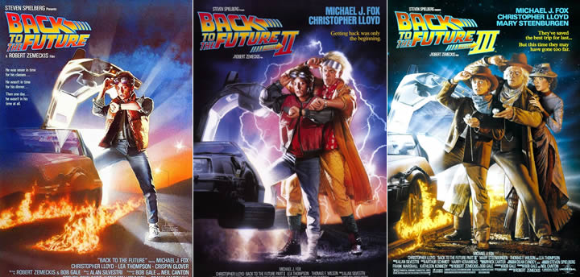
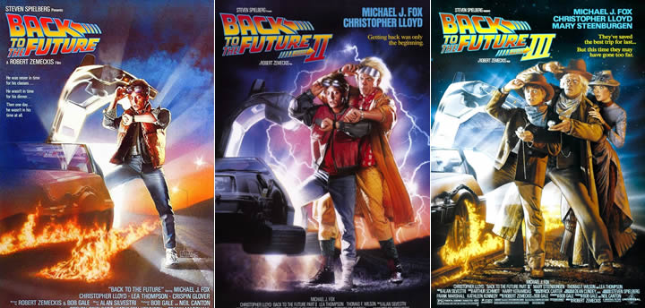
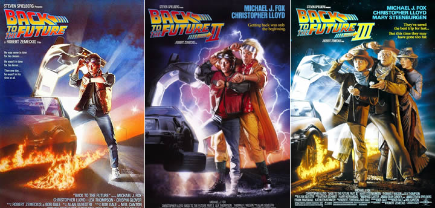
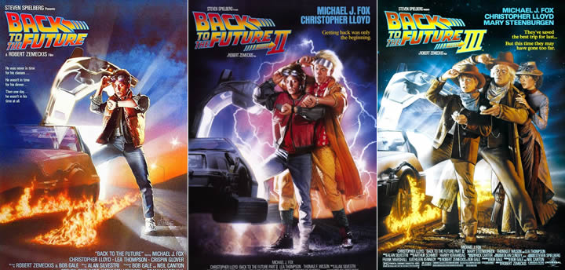
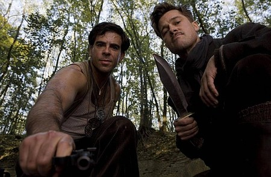
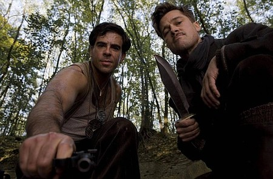

El adolescente Marty McFly es amigo de Doc, un científico al que todos toman por loco. Cuando Doc crea una máquina para viajar en el tiempo, un error fortuito hace que Marty llegue a 1955, año en el que sus futuros padres aún no se habían conocido. Después de impedir su primer encuentro, debe conseguir que se conozcan y se casen. De lo contrario, su existencia no sería posible.
Doc vuelve a aparecer con una máquina del tiempo mucho más modernizada y le pide a Marty y a su novia que le acompañen al futuro. En el Hill Valley de 2015 deberán solucionar un problema con la ley que tendrá uno de los futuros hijos de Marty y Jenny. En el futuro, Biff Tannen roba la máquina del tiempo y vuelve al pasado para darle a su hijo un libro con estadísticas deportivas para poder ganar una enorme fortuna en las apuestas. Marty y Doc tendrán que parar la posible catástrofe del destino.
Marty McFly sigue en 1955 y Doc ha retrocedido al año 1885, la época del salvaje oeste. Marty recibe una carta de Doc en la que le informa de que la máquina del tiempo está averiada y no puede volver al presente, pero que no le importa seguir en el pasado. Sin embargo, Marty descubre una tumba en la que lee que Doc murió en 1885 y decide ir a rescatar a su amigo.
Seis criminales profesionales son contratados para robar en un almacén de diamantes, pero la policía aparece inesperadamente en el momento del atraco. Algunos miembros de la banda mueren en el enfrentamiento y otros logran huir, reagrupándose en un almacén y dispuestos a descubrir quién los delató.
II Guerra Mundial, Francia, Shosanna presencia la ejecución de su familia por orden del coronel nazi Hans Landa. Huye a Paris y adopta una nueva identidad como propietaria de un cine. Mientras el teniente Aldo Raine adiestra a un grupo de soldados judíos. Los hombres de Raine y una actriz alemana que agente doble, deben llevar a cabo una misión que hará caer a los jefes del Tercer Reich. El destino quiere que todos se encuentren bajo la marquesina de un cine donde Shosanna espera para vengarse.
 


A finales de los 60, Hollywood empieza a cambiar y el actor Rick Dalton trata de adaptarse a los nuevos tiempos. Junto a su doble, ambos experimentan problemas para modificar sus hábitos, debido a lo enraizados que están. Al mismo tiempo, nace una relación entre Rick y la actriz Sharon Tate, que fue víctima de la familia Manson en la matanza de 1969